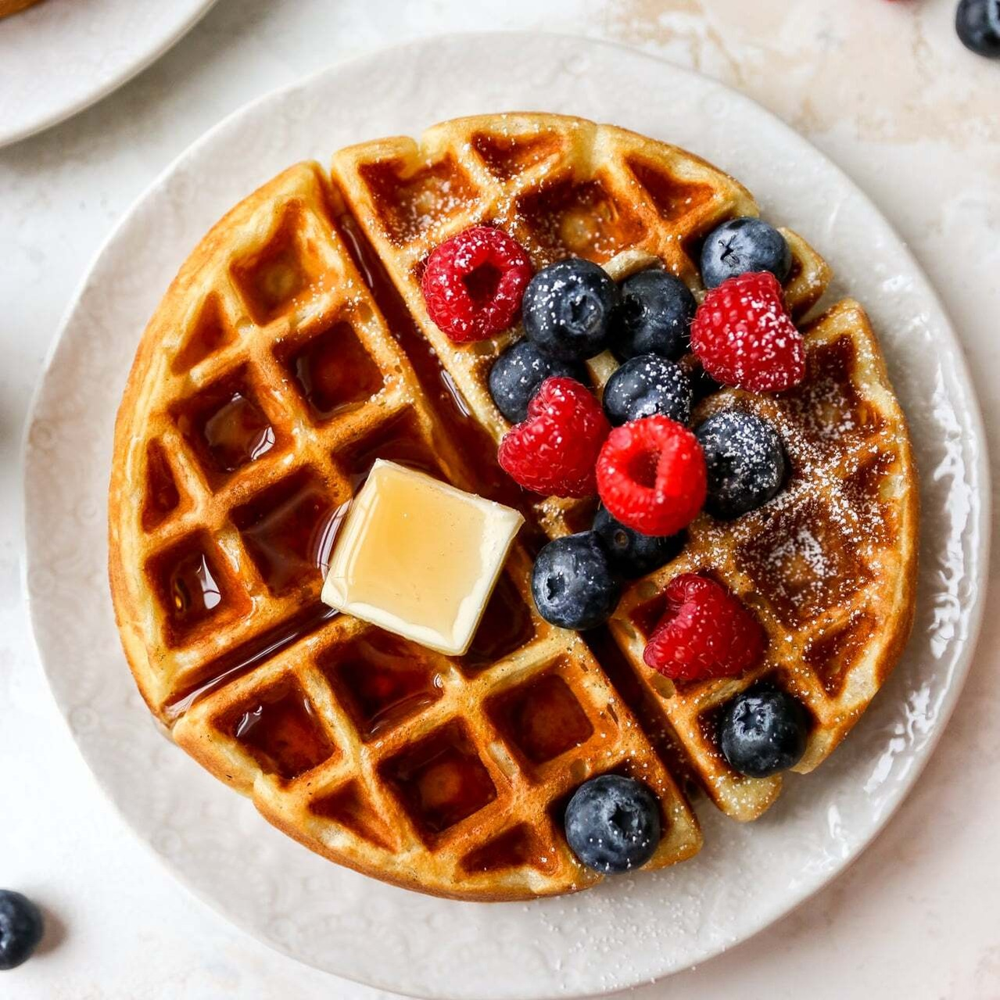

Ingredients:
2 cups all-purpose flour 2 tablespoons sugar 1 tablespoon baking powder 1/2 teaspoon salt 1 3/4 cups milk 1/3 cup vegetable oil 2 large eggs 1 teaspoon vanilla extract
Instructions:
In a large mixing bowl, whisk together the flour, sugar, baking powder, and salt. In another bowl, whisk together the milk, vegetable oil, eggs, and vanilla extract. Pour the wet ingredients into the dry ingredients and gently stir until just combined. Be careful not to overmix; some lumps are okay. Preheat your waffle iron according to the manufacturer's instructions. Pour the batter onto the preheated waffle iron, spreading it evenly. Close the lid and cook until the waffles are golden brown and crisp. Carefully remove the waffles from the iron and repeat with the remaining batter. Serve the waffles warm with your favorite toppings such as maple syrup, fresh fruit, whipped cream, or a dusting of powdered sugar.
Waffles
Author
Whomemade waffles with this quick and easy recipe. Achieve golden-brown perfection with a crispy exterior and fluffy inside, perfect for breakfast or brunch. Enjoy the deliciousness with your favorite toppings for a delightful treat.
2 cups all-purpose flour 2 tablespoons sugar 1 tablespoon baking powder 1/2 teaspoon salt 1 3/4 cups milk 1/3 cup vegetable oil 2 large eggs 1 teaspoon vanilla extract
Instructions:
In a large mixing bowl, whisk together the flour, sugar, baking powder, and salt. In another bowl, whisk together the milk, vegetable oil, eggs, and vanilla extract. Pour the wet ingredients into the dry ingredients and gently stir until just combined. Be careful not to overmix; some lumps are okay. Preheat your waffle iron according to the manufacturer's instructions. Pour the batter onto the preheated waffle iron, spreading it evenly. Close the lid and cook until the waffles are golden brown and crisp. Carefully remove the waffles from the iron and repeat with the remaining batter. Serve the waffles warm with your favorite toppings such as maple syrup, fresh fruit, whipped cream, or a dusting of powdered sugar.